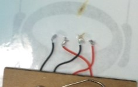
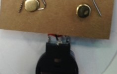
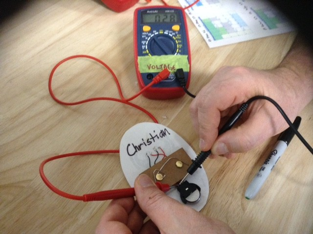
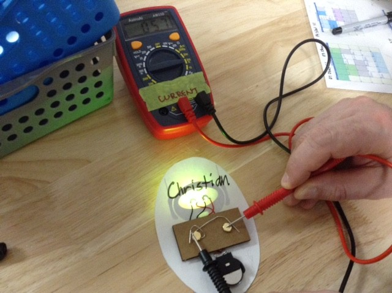
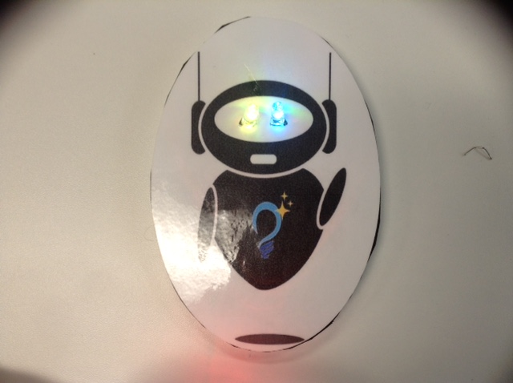

Soldering:
 Voltage and Current:
 Final Showcase:
Reflection Questions:
What were you drawn to?
I was drawn to the creation of circuits to accomplish a certain task. I enjoyed working with wires and soldering in order to create a light
switch. It was really enjoyable for me to finally connect all the pieces together in order to create an electrical system.
What might you want to learn more about?
I would love to learn more about how to create more complex circuits. I would like to operate with different pieces of circuitry in order to
create electrical systems with different goals in mind. For example, I would like to create whole electronics using the skills I have gained in
this unit.
What does what you learned connect to?
What I have learned connects to electrical engineering and circuitry. The skills I have acquired in this course should aid me if I decide to
pursue a career in this field going forward. For circuitry, this knowledge should allow me to continue my exploration of electrical systems
so that I may develop electronics on my own if I wish.
Were there areas of risk?
There were several areas of risk when I did my soldering activity. There was risk from the soldering iron itself, which could burn you if you
touch it. There was also risk from the molten solder, which could cause burns if it gets on you while soldering. There is once again risk with
the soldering iron, as it can burn objects in its surroundings if it is not placed securely in its holder.